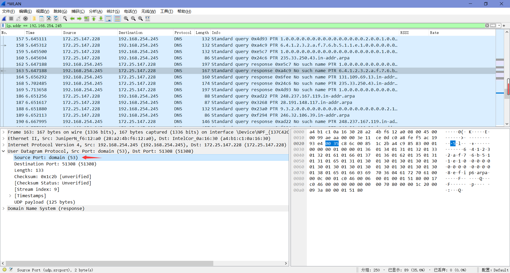

lab7-1 Wireshark_DNS
Lab7-1 DNS
1 Introduction
域名系统(DNS)将主机名转换为IP地址，在互联网基础设施中发挥着关键作用。
2 Steps
Step 1: nslookup
简单介绍几种常用的nslookup命令：
“nslookup www.mit.edu”，意为“请给我发送主机www.mit.edu的IP地址”。
“nslookup –type=NS mit.edu”，意为”请把mit.edu的权威DNS的主机名发给我“，当不使用-type选项时，nslookup使用默认值，即查询A类型的记录。

“nslookup www.aiit.or.kr bitsy.mit.edu”，使用这个命令，我们将会将查询发送到DNS服务器bitsy.mit.edu，而不是缺省DNS服务器(DNS -prime.poly.edu)，即查询和回复直接发生在我们的查询主机和bitsy.mit.edu之间。
这里一直显示超时，估计是地域原因（主机www.aiit.or.kr是韩国高级信息技术学院的web服务器）。
“nslookup –option1 –option2 host-to-find dns-server”是nslookup的一般语法，我们可以看到，nslookup可以在0个、1个、2个或多个选项的情况下运行（dns-server也是可选的）。
1. Run nslookup to obtain the IP address of a Web server in Asia. What is the IP address of that server?
如图，获取到”www.sdu.edu.cn”的IP地址为202.194.7.118（2001:da8:7000:7:202:194:7:118为IPv6地址）。
2. Run nslookup to determine the authoritative DNS servers for a university in Europe.
这里选择了剑桥大学。
3. Run nslookup so that one of the DNS servers obtained in Question 2 is queried for the mail servers for Yahoo! mail. What is its IP address?
如下图，这里试了很多个问题2中的DNS服务器都显示找不到，最后就查了剑桥大学来代替了。得到的IP地址为128.232.132.8。
Step 2: ipconfig
ipconfig可以用来显示当前的TCP/IP信息，包括本机的地址、DNS服务器地址、适配器类型等，我们使用”ipconfig /all”命令来获得以上提到的所有信息。

ipconfig对于管理存储在主机中的DNS信息也非常有用，比如我们可以使用”ipconfig /displaydns”命令来查看主机缓存的最近获得的DNS记录。

我们也可以通过输入”ipconfig /flushdns”命令来清除缓存。

Step 3: Tracing DNS with Wireshark
现在我们将通过Wireshark来追踪DNS。首先，使用”ipconfig /flushdns”命令来清楚DNS缓存。然后在Wireshark中使用”ip.addr == 192.168.254.245”（这里的192.168.56.1是本机IP地址）过滤器（这个过滤器将删除既不从本地主机发出也不发往本地主机的所有数据包）来开始抓包。最后，使用浏览器浏览一个网页，如这里实验手册提供的”http://www.ietf.org"。抓包结果如下图。
4. Locate the DNS query and response messages. Are then sent over UDP or TCP?
如下图，通过UDP发送。
5. What is the destination port for the DNS query message? What is the source port of DNS response message?
由下面两图可知，DNS查询消息的目的端口和DNS响应消息的源端口都为53。

6. To what IP address is the DNS query message sent? Use ipconfig to determine the IP address of your local DNS server. Are these two IP addresses the same?
DNS查询消息发送到的IP地址为192.168.254.245，使用 ipconfig 确定的本地 DNS 服务器的 IP 地址也为192.168.254.245。对比可以发现，二者相同。
7. Examine the DNS query message. What “Type” of DNS query is it? Does the query message contain any “answers”?
如下图，为A类型（也有AAAA类型），没有答案。
8. Examine the DNS response message. How many “answers” are provided? What do each of these answers contain?
下面这个例子中，答案数为1，其内容如图。

9. Consider the subsequent TCP SYN packet sent by your host. Does the destination IP address of the SYN packet correspond to any of the IP addresses provided in the DNS response message?
如下图可知，二者相对应。

10. This web page contains images. Before retrieving each image, does your host issue new DNS queries?
发起了新的查询，原因可能是图片存放的服务器的域名和之前查询的不一致。
现在我们来练习使用nslookup。首先，先在命令行运行”ipconfig /flushdns”以清除缓存。在打开Wireshark开始抓包后，在命令行中输入”nslookup on www.mit.edu”。

运行完成后停止抓包，得到结果如下图。
11. What is the destination port for the DNS query message? What is the source port of DNS response message?
由下面两图可知，与之前一样，DNS查询消息的目的端口和DNS响应消息的源端口都为53。


12. To what IP address is the DNS query message sent? Is this the IP address of your default local DNS server?
由下图可知，DNS 查询消息发送到的IP地址为192.168.254.245，这与我们之前得到的本地DNS服务器的IP地址相同。
13. Examine the DNS query message. What “Type” of DNS query is it? Does the query message contain any “answers”?
如下图，为A类型（也有AAAA类型），没有答案。
14. Examine the DNS response message. How many “answers” are provided? What do each of these answers contain?
如下图，答案数为3，内容如图。
15. Provide a screenshot.
上面每个问题的回答都带有截图。
现在重复刚刚的实验，不过把命令换为”nslookup –type=NS mit.edu”。抓包结果如下。

16. To what IP address is the DNS query message sent? Is this the IP address of your default local DNS server?
由下图可知，DNS 查询消息发送到的IP地址为192.168.254.245，这与我们之前得到的本地DNS服务器的IP地址相同。

17. Examine the DNS query message. What “Type” of DNS query is it? Does the query message contain any “answers”?
如下图，为NS类型，没有答案。

18. Examine the DNS response message. What MIT nameservers does the response message provide? Does this response message also provide the IP addresses of the MIT namesers?
如图，提供了麻省理工学院的一系列nameserver。经比对可发现，响应消息里不包含麻省理工学院的IP地址。
19. Provide a screenshot.
上面每个问题的回答都带有截图。
再次重复刚刚的实验，不过把命令换为”nslookup www.google.com bitsy.mit.edu”（这里实验手册给出的命令为”nslookup www.aiit.or.kr bitsy.mit.edu”，但一直超时（如下图），试了下最后发现改成谷歌可以）。
抓包结果如下。

20. To what IP address is the DNS query message sent? Is this the IP address of your default local DNS server? If not, what does the IP address correspond to?
由下图可知，DNS 查询消息发送到的IP地址为18.0.72.3，这与我们之前得到的本地DNS服务器的IP地址不同，它对应的是bitsy.mit.edu。

21. Examine the DNS query message. What “Type” of DNS query is it? Does the query message contain any “answers”?
如下图，为A类型（也有AAAA类型），没有答案。

22. Examine the DNS response message. How many “answers” are provided? What does each of these answers contain?
如下图，答案数为1，内容如图。
23. Provide a screenshot.
上面每个问题的回答都带有截图。